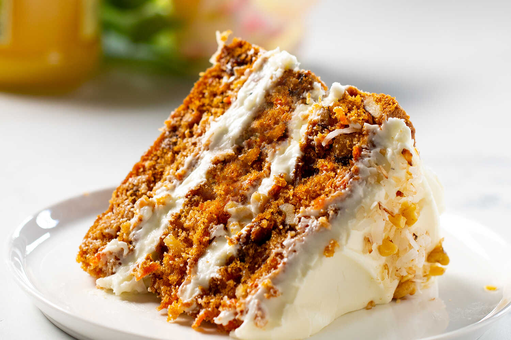

The Best Carrot Cake

Description
This is such a great recipe! A few years ago, my lovely wife challenged
me to a cake baking contest. She allowed me to choose the cake flavor, and
I couldn't just pick an easy one. Carrot cake typically has quite a bit going
on, and this recipe is no exception.
To replicate the full profile of the flavor, do not skip the Buttermilk Glaze!
Note: If you prefer less sweet, the taste is still amazing if you use only
one cup of sugar here.
Ingredients
- 2 cups all-purpose flour
- 2 tsp. baking soda
- 1/2 tsp. table salt
- 2 tsp. ground cinnamon
- 3 large eggs
- 2 cups granulated sugar
- 3/4 cup vegetable oil
- 3/4 cup buttermilk
- 2 tsp. vanilla extract
- 2 cups grated carrot
- 1 (8oz.) can crushed pineapple, drained
- 3-1/2 oz. flaked coconut
- 1 cup chopped pecans or walnuts
- Buttermilk Glaze
- Cream Cheese Frosting
Also, don't forget the most important ingredient...
Love!
Steps
- Preheat oven to 350°F. Line 3 (9-inch) round cake pans with parchment
paper; lightly grease and flour parchment paper. Set pans aside.
- Stir together first 4 ingredients—flour, baking soda, salt, and
cinnamon.
- Beat eggs and next 4 ingredients at medium speed with an electric mixer
until smooth. Add flour mixture, beating at low speed until blended. Fold
in carrot and next 3 ingredients.
- Pour batter into prepared cake pans.
- Bake at 350°F for 25 to 30 minutes or until a wooden pick inserted in
center comes out clean.
- Drizzle Buttermilk Glaze evenly over
layers; cool in pans on wire racks 15 minutes.
- Remove from pans, and cool completely on wire racks.
- Spread Cream Cheese Frosting
between layers and on top and sides of cake.
Oh, and of course the best step of all, slice and enjoy!
Back to Odin Recipes